marp: true theme: gaia class: invert
A laughably-minimalist, integer-only, read-only Relational Database Management System that makes the author question why they ever bothered to write it up!
19th August, 2020 Wednesday
There are 2 kinds of commands in this database.
Note: Not all operators have been implemented, some have been omitted for you to implement in later phases
Non-assginment statements do not create a new table (except load which just loads an existing table) in the process
The following haven’t been implemented - INDEX
Syntax:
LOAD <table_name>
- To successfully load a table, there should be a csv file names <table_name>.csv consisiting of comma-seperated integers in the data folder
- None of the columns in the data file should have the same name
- every cell in the table should have a value
Run: LOAD A
Syntax
LIST TABLES
This command lists all tables that have been loaded or created using assignment statements
Run: LIST TABLES
Run: LOAD B, LIST TABLES
Syntax
PRINT <table_name>
Run: PRINT B
Syntax
RENAME <toColumnName> TO <fromColumnName> FROM <table_name>
Run: RENAME b TO c FROM B
Syntax
EXPORT <table_name>
Run: EXPORT B
Syntax
CLEAR <table_name>
- Removes table from system
- The table has to have previously existed in the system to remove it
- If you want to keep any of the changes you’ve made to an old table or want to keep the new table, make sure to export !
Run: CLEAR B
Syntax
QUIT
Run: QUIT
Syntax:
INDEX ON <columnName> FROM <table_name> USING <indexing_strategy>
Where <indexing_strategy> could be
- BTREE - BTree indexing on column
- HASH - Index via a hashmap
- NOTHING - Removes index if present
All assignment statements lead to the creation of a new table.
Every statement is of the form <new_table_name> <- <assignment_statement>
Naturally in all cases, <new_table_name> shouldn’t already exist in the system
The following haven’t been implemented - DISTINCT - JOIN - SORT
Syntax
<new_table_name> <- CROSS <table_name1> <table_name2>
Run: cross_AA <- CROSS A A
A(A, B) x A(A, B) -> cross_AA(A1_A, A1_B, A2_A, A2_B)
Syntax
<new_table_name> <- SELECT <condition> FROM <table_name>
Where
<first_column_name> <bin_op> <second_column_name>
<first_column_name> <bin_op> <int_literal>
Where <bin_op> can be any operator among {>, <, >=, <=, =>, =<, ==, !=}
Run: R <- SELECT a >= 1 FROM A
S <- SELECT a > b FROM A
Syntax
<new_table_name> <- PROJECT <column1>(,<columnN>)* FROM <table_name>
Run: C <- PROJECT c FROM A
Syntax
<new_table_name> <- DISTINCT <table_name>
Exmample: D <- DISTINCT A
Syntax
<new_relation_name> <- JOIN <table1>, <table2> ON <column1> <bin_op> <column2>
Where <bin_op> means the same as it does in the SELECT operator
Example: J <- JOIN A, B ON a == a
Syntax
<new_table_name> <- SORT <table_name> BY <column_name> IN <sorting_order>
Where <sorting_order> can be ASC or DESC
Example: S <- SORT A BY b IN ASC
Syntax
SOURCE <query_name>
- Special command that takes in a file script from the data directory
- file name should end in “.ra” indicating it’s a query file
- File to be present in the data folder
- Used in last phase of project
Buffer Manager
Cursors
Tables
Executors

Run: LOAD A with debugger
see: load.cpp
see: syntacticParser.h syntacticParser.cpp
see: semanticParser.h semanticParser.cpp
Every command(COMMAND) has a file in the executors directory, within that directory you’ll find 3 functions
syntacticParseCOMMAND
semanticParseCOMMAND
executeCOMMAND
Load splits and stores the table into blocks. For this we utilise the Buffer Manager
Buffer Manager follows a FIFO paradigm. Essentially a queue
A cursor is an object that acts like a pointer in a table. To read from a table, you need to declare a cursor.
Run: R <- SELECT a == 1 FROM A with debugger
Every function call is logged in file names “log”
Note: may include duplicate elimination * Tentative